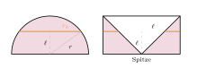
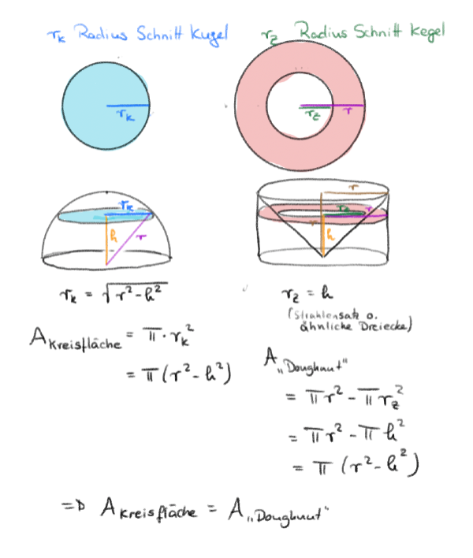

Aufgabe 7.9
Führen Sie den Beweis zu Ende, indem Sie zeigen das die beiden Querschnitte auf einer beliebigen Höhe $h$ identisch sind.
- Berechnen Sie die Querschnittsfläche der Halbkugel in Höhe h
- Berechnen Sie die Querschnittsfläche von Zylinder minus Kegel
- Zeigen Sie, dass beide Flächen gleich sind
- Nutzen Sie den Satz des Pythagoras

Die Halbkugel in der Höhe $\ell$. Der Schnitt ist ein Kreis mit Radius $r_k$. Im rechtwinkligen Dreieck aus Mittelpunkt, Schnittmitte und Randpunkt gilt $r_k^2 + \ell^2 = r^2$, also \[A_{\text{Halbkugel}}(\ell) = \pi r_k^2 = \pi\,(r^2 - \ell^2).\]
Zylinder minus Kegel in der Höhe $\ell$. Der Kegel steht mit der Spitze nach unten im Zylinder. Sein Radius wächst gleichmässig von $0$ unten bis $r$ oben, und weil Höhe und Radius beide $r$ sind, ist er in der Höhe $\ell$ genau $\ell$ (Strahlensatz). Der Schnitt ist ein Ring zwischen den Radien $\ell$ und $r$: \[A_{\text{Ring}}(\ell) = \pi r^2 - \pi\ell^2 = \pi\,(r^2 - \ell^2).\]
Die beiden Schnittflächen sind in jeder Höhe $\ell$ zwischen $0$ und $r$ gleich.
Dasselbe als Skizze von Hand:
